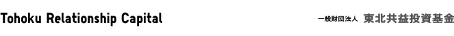

Action Plan under Recovery Assistance Project
- 1.
- Support for the creation of new industry models
Tohoku Relationship Capital actively invests (provide funds as capital) in businesses that drive local economic growth. It aims to contribute to the expansion of local economies while developing new communities in the region.
- 2.
- Management support for businesses
Tohoku Relationship Capitals aims to provide businesses in Tohoku with management support and expertise, so companies can provide products and services that are unique to their communities.
- 3.
- Recirculation of funds
Tohoku Relationship Capital expects the small financial institutions it works with to take over business funding activities after five years. It will reinvest funds that are repaid as aid to NGOs.
Creating a financial network to support reconstruction
Financing should play a major role in the reconstruction of communities in Japan's hard-hit Tohoku region. Tohoku Relationship Capital will establish opportunities for multiple stakeholder discussions.
Progress of Activities under Recovery Assistance Project (As of December 31, 2012)
Miyagi Prefecture
- -
- Support for Ogatsu Suzuri Association (an organization for artists who work with stone)
Tohoku Relationship Capital provides a wide range of assistance, from branding to the development of sales leads, in cooperation with specialists from different business fields. It also provides support to the association on management issues.
- -
- Sato Shipyard
Tohoku Relationship Capital provides hands-on management with external experts on an ongoing basis, to restore its dry dock facilities as quickly as possible, while strengthening its ship repair capabilities.
- -
- Oikawa Electric
This company faces funding issues related to its plans to expand its facilities and ramp up capacity to meet demand linked to post-disaster reconstruction efforts. Tohoku Relationship Capital provides ongoing management support to help facilitate discussion with relevant parties.
- -
- Trust Co., Ltd.
Tohoku Relationship Capital is providing management support for financial reconstruction and new business development. This is a first step toward building a manufacturing ecosystem for this company, which provides electronics manufacturing services in Watari-gun, Miyagi Prefecture.
Iwate Prefecture
- -
- Kamaishi Hikari Foods
This company is the first participant in Tohoku Relationship Capital' Sanriku Rias Recovery Funds program, which is designed to ramp up reconstruction financing along the coast of Iwate Prefecture. Tohoku Relationship Capital is providing support for efforts to develop business plans and sales leads.
Capital for Entrepreneurs
- -
- Peace Nature Lab
Tohoku Relationship Capital is helping to create business plans and commercialize smoked products.
Reports
- -
- Project No. 1: Ogatsu Suzuri Association
Ogatsu Suzuri Association developed inkstone tableware as an additional source of revenue, so it could continue to make traditional crafts. It developed these dishes long before the earthquake. It plans to sell its goods online and in overseas markets, while expanding its customer base through new product development. The association plans to brand its new tableware products with "tradition" and "new frontiers" as key concepts.
- -
- Project No. 2: Sato Shipyard
After being devastated by the quake and tsunami, Sato Shipyard resumed operations, despite the limited amount of equipment and resources it had on hand. The No.8 Taisei Maru is the first ship to be repaired and launched from the shipyard since the disaster.
"Thanks to Sato Shipyard's Fumihiko Sato, I have been in a positive frame of mind and have been wanting to go out to sea as quickly as possible," said Masataka Tsuda, the owner of the No. 8 Taisei Maru. "I lost my boat to the disaster. For a few months, I worked at removing rubble. Sato called me and said he had a damaged boat in his shipyard. He said I could use it if I could repair it. The support from Sato Shipyard was huge."
Future plans
In the fiscal year to September 30, 2012, Tohoku Relationship Capital provided management support and 96 million yen in funding for six projects, while creating a financial network to support reconstruction. In the fiscal year from October 2012 to September 2013, Tohoku Relationship Capital will continue to use private funds to actively develop projects in Fukushima and the rest of the Tohoku region. Specifically, Tohoku Relationship Capital is working to provide three types of funds for businesses, in cooperation with government agencies and a range of financial institutions. The three types of funds are capital for business growth, additional capital to handle activities that are not covered by government subsidies, and bedrock capital to support businesses struggling under multiple debts.
Tohoku Relationship Capital will also dispatch external experts in areas such as management support, business reconstruction, product development and market expansion to fund recipients. It will continue with its efforts to maximize the business value of those receiving support.


{kind=link}
{kind=link}
{kind=link}
{kind=link}
{kind=link}